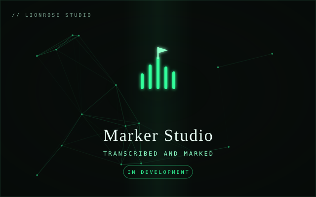

AI transcription that drops speaker-labeled markers straight into Avid, so editors find any line in seconds.

Marker Studio transcribes your footage and drops speaker-labeled markers straight into Avid. Instead of scrubbing takes, editors jump to the exact line they remember.
It is proven in a working network-series edit bay, and it installs as a native Mac application with everything it needs bundled in.
Accurate transcripts across every take.
Markers dropped in and named by who is talking.
Markers land in the timeline, ready to use.
Running today in a network-series edit.
Marker Studio installs as a native Mac application. Reach out to request access for your edit bay.